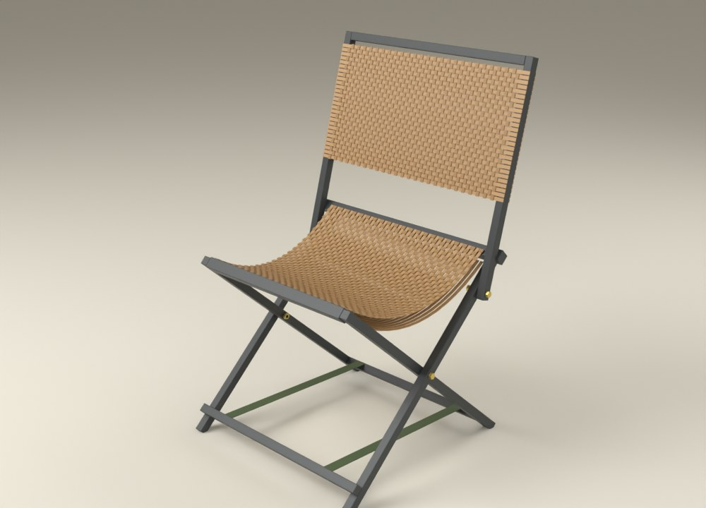

KS-2
Kamp sandalyesi
Tam katlanır, elde taşınır, askı örgü oturak.
554 × 540 × 880 mm · katlı 554 × 110 × 680Nasıl yapılır →SEKİ · örgülü dış mekân mobilyası
Çelik iskelet, elde örülmüş rattan şerit. 18 ürün; hepsi aynı iki profil ve aynı şeritle yapılıyor. Nasıl yapıldıklarını da tek tek anlatıyoruz.
Nasıl yapılır →
Tam katlanır, elde taşınır, askı örgü oturak.
554 × 540 × 880 mm · katlı 554 × 110 × 680Nasıl yapılır →